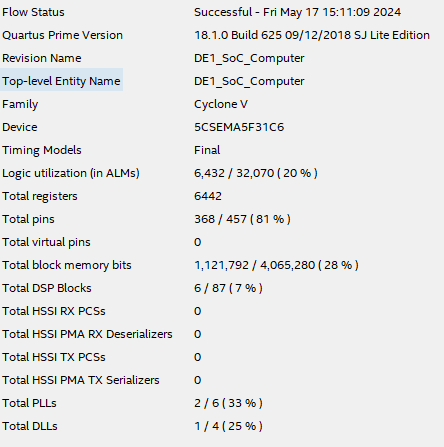

A hardware accelerated sudoku puzzle solver, implemented on the FPGA.
Our project aimed to solve Sudoku puzzles using FPGA, complemented by an elegant interface that allows users to interact with the Sudoku grid. We chose this project to leverage FPGAs rapid processing capabilities, creating an engaging and interactive platform for Sudoku enthusiasts. Sudoku puzzles not only offer entertainment but also enhance cognitive skills such as problem-solving and critical thinking.
In our implementation, users can control the Sudoku grid using a mouse and keyboard. We utilized a backtracking algorithm on the FPGA to solve the puzzles efficiently. The on-chip CPU, with the help of the FPGA, displays the Sudoku grid on a VGA screen, enabling users to input numbers and see the puzzle visually. The FPGA handles the solving process in real-time, updating the grid and providing immediate feedback.
Introduction
Sudoku puzzle is a widely popular math game. In its basic and widely recognized form, Sudoku comprises a 9 × 9 grid, with numbers already filled in some of the squares. The goal of the puzzle is to complete the grid by filling in the remaining squares, ensuring that each row, column, and the nine 3 × 3 subgrids contain the numbers 1 through 9 exactly once. The trick to solve the puzzle is to utlize the numbers contain in the grid as hints to deduce possible solutions. Figure below is an example of one of the world's hardest sudoku puzzle. It is very challenging because it only has one solution while the puzzle only provides limited hint. If you are interested, try to solve the puzzle by yourselves and compared the result with our implementation which is shown in the testing and result section.
The hardware we are using is the Intel DE1_SoC board. The DE1-SoC is a development board created by Altera (now part of Intel) designed for system-on-chip (SoC) applications and experiments, integrating a variety of hardware features to facilitate collaboration between FPGA (Field Programmable Gate Array) and ARM processor design. Key components include the high-performance Cyclone V FPGA for hardware acceleration and parallel processing, and the dual-core ARM Cortex-A9 for running embedded software and operating systems. The board offers various peripherals and interfaces, such as buttons and switches for user input, a seven-segment display, an ADC for analog-to-digital conversion, an audio codec for I2C communication, video input for camera connectivity, VGA output, Ethernet for network communication, GPIO for external device interfacing. Figure below is the DE1-SoC board.
High Level Design
The rationale behind our project is to create an engaging and interactive platform for Sudoku enthusiasts that leverages the power of FPGA technology for rapid puzzle solving. Sudoku, a popular logic-based puzzle, not only provides entertainment but also helps in enhancing cognitive skills such as problem-solving and critical thinking. By integrating a VGA interface, we aim to offer a visually appealing and user-friendly experience that can be easily accessed and manipulated.
Overal Structure
The figure above is the overall structure of the Sudoku solver. The HPS first sends the Sudoku puzzle to the VGA screen, displaying the problem visually. Simultaneously, the Sudoku puzzle is sent to the FPGA. The control unit in the FPGA receives the puzzle and writes it to the Sudoku register. The control unit then notifies the updater unit, which is responsible for updating the Sudoku grid.
Once the puzzle is input, the updater uses the backtracking algorithm to update the values in the Sudoku register, with assistance from the control unit. After each update, the checker verifies whether the solution is valid. Based on the checker's results, the updater continues to adjust the Sudoku register according to the backtracking algorithm until a valid solution is found.
The four modules are explained in detail in the Hardware Design section.
backtracking Algorithm
Like all other Backtracking problems, Sudoku can be solved by assigning numbers one by one to empty cells. Before assigning a number, check whether it is safe to assign.Check that the same number is not present in the current row, current column and current 3X3 subgrid. After checking for safety, assign the number, and recursively check whether this assignment leads to a solution or not. If the assignment doesn’t lead to a solution, then try the next number for the current empty cell. And if none of the numbers (1 to 9) leads to a solution, return false and print no solution exists.
Follow the steps below to solve the problem. We start with the first empty cell and test numbers from 1 to 9 sequentially. If a number satisfies all three conditions—meaning it is not already present in the same row, column, or block—we place that number in the cell. We then proceed to the next empty cell and repeat the process with the updated Sudoku board. As we continue, we might encounter a cell where no number between 1 and 9 fits. When this happens, we backtrack to the previous cells and try alternative numbers. Given that a Sudoku puzzle has only one solution, we will keep rejecting invalid solutions until we find the correct one that meets all conditions for every initially empty cell.
Hardware/software trade offs
The hardware tradeoff is related to resource usage. We used 81 registers to store the Sudoku map. However, to facilitate updating the registers, the updater itself also stores the empty cells that need to be updated. Since the number of empty cells can be up to 81, this means we used double the number of registers. With a more refined design, we should be able to halve the number of registers used.
Additionally, we considered preprocessing the Sudoku map on the software side so that the updater would know the possible ranges for the empty cells, thus reducing the range of potential answers. However, this preprocessing would also require time. Due to the complexity of this design, we have not implemented it yet.
Hardware Design
The hardware design is seperate into four modules: Control Unit, Sudoku Register, Updater and Checker as shown in Figure below. Each module is designed and tested seperately. Each module has different functionalities and communicate through the signals indicated in the Figure.
Control Unit
The control unit plays a pivotal role in the Sudoku solver, overseeing the functions of the updater, checker, and Sudoku register. Initially, it manages input signals, distributing them to both the updater and the Sudoku register. As the updater works on updating data within the Sudoku register array, the control unit assists by facilitating the writing process. Once the update is complete, the control unit prompts the checker to verify the Sudoku puzzle.
Sudoku Register
Each solver contains a register array of 4 bits * 81 size. The value of each array is updated by the updater and read and checked by the checker. Each register stores a 4-bit value representing the answer to the Sudoku cells. For example, numbers from 1-9, with 0 indicating an empty cell.
Updater
The updater contains two arrays of 81 registers each. One array stores the cell values, while the other stores the positions of these values in the Sudoku register. Initially, all values are set to zero, representing empty cells. The updater receives signals from the checker to determine how to proceed with updates. When the updater starts, it writes values to both its own register and the Sudoku register.
Checker
The checker verifies the validity of the current values in the Sudoku register. Utilizing the backtracking algorithm, it ensures that values are written to the next cell only if the previously filled values form a valid solution. Therefore, it only checks the column, row, and block related to the most recently filled value. The checker comprises three modules that check the relevant column, row, and block for a given position.
Qsys Port
To facilitate communication between the HPS and FPGA, we established Qsys ports to enable data exchange between the two components. The figures below depict our Qsys implementation, illustrating the configuration and interconnection of these ports.
Software Design and Implementation
Our project utilizes a System-on-Chip (SoC) platform, integrating an ARM Cortex-A9 processor, referred to as the Hard Processor System (HPS) according to Intel's terminology. We employed a Linux operating system running on the HPS to compile and execute the C program essential for our Sudoku puzzle solver.
The primary objectives of the C program include:
Drawing the Sudoku grid on a VGA display.
Handling user input and interaction via mouse and keyboard.
Sending Sudoku puzzle data to the FPGA for processing.
Receiving the solution from the FPGA and displaying it on the VGA.
VGA Display Interface
To render the Sudoku grid on the VGA screen, we utilized external SDRAM in the DE1-SoC as a frame buffer. The FPGA continuously reads pixel values from the SDRAM to display on the VGA screen, while the HPS updates the pixel values in the SDRAM to refresh the display.
Drawing Functions
The graphical output is managed through a series of drawing functions in C:
drawPixel: Draws a pixel of a specified color at given coordinates.
drawLine, drawDisk, drawRectangle, drawBox: Built upon drawPixel to draw various shapes needed for the interface.
Sending Sudoku puzzle data to the FPGA for processing.
Receiving the solution from the FPGA and displaying it on the VGA.
Grid and Number Rendering
The Sudoku grid is rendered using the drawLine function. The initial coordinates and spacing between rows and columns are calculated to ensure a centered and evenly spaced 9x9 grid.
To display numbers within the grid, we designed custom fonts following the Digital-7 Regular Font design. Each digit is composed of vertical and horizontal rectangles, and specific functions (drawOne through drawNine) were created to draw digits at defined positions.
User Interaction
We believe the best way to interact with the Sudoku puzzle is through a mouse and keyboard just like using pens to write in a paper. We utilized two USB hosts on DE1-SoC to connect a mouse and keyboard with HPS.
Mouse: Connected via USB and read from /dev/input/mice, the mouse position is tracked by summing relative movements. We use a non-blocking read function to ensure smooth interaction.
Keyboard: Connected via USB and read from /dev/input/event#, where # varies. The non-blocking read function is used to capture key presses, which are then mapped to corresponding numbers.
Grid State Management
A one-dimensional array of length 81 represents the Sudoku grid, with each element corresponding to a cell. This array updates dynamically as the user inputs or changes numbers.
Game Logic
Upon starting the game, the user interacts with the grid via a red disc representing the mouse pointer. Numbers are input by left clicking a cell and pressing a key, and erased by right-clicking.
The game's logic flow is as follows:
Initialization: Users input the Sudoku puzzle and press "Initialization Done". The software checks for rule violations, highlighting errors in red.
Image before Initialization
Image of Wrong Initialization
Image of Correct Initialization
Mode Selection: Users choose between "User mode" (solving manually) and "FPGA mode" (solved by the FPGA). The digit colors indicate the mode (green for user input, black for initialization, and blue for FPGA solution).
Image of User mode
FPGA Interaction: If FPGA mode is selected, the HPS sends the grid data to the FPGA via Qsys ports, waits for the FPGA to solve it, and then retrieves and displays the solution. The total processing time of FPGA is also shown in the upper left corner of VGA.
Image of User mode + FPGA mode
FPGA Communication
Sending Data to FPGA
The communication between the HPS and FPGA for transmitting the Sudoku puzzle involves the following steps:
Initiate Transmission: The HPS sends a flag to the FPGA to indicate the start of data transmission.
Transmit Cell Values: The HPS sends the value of each cell along with its corresponding address through dedicated Qsys ports. This process continues until all cells of the Sudoku grid have been transmitted.
Completion Signal: After transmitting all the cell values, the HPS sends a completion signal to the FPGA, indicating that the data transmission is finished.
Sending Data to FPGA
Once the data transmission is complete, the HPS follows these steps to receive the processed data from the FPGA:
Status Signal: The HPS waits for a status signal from the FPGA. This signal indicates whether the FPGA has successfully solved the puzzle.
If the status signal is 2, it means the FPGA could not solve the puzzle.
If the status signal is 1, it means the FPGA has successfully solved the puzzle and is ready to transmit the solution.
Retrieve Solved Puzzle: Upon receiving a status signal of 1, the HPS sends an address to the FPGA. The FPGA then responds with the solved value for that address. This process is repeated until the entire solved puzzle is received by the HPS.
Main Loop
The program operates within a continuous loop, updating the display and processing user input:
The mouse pointer is redrawn at its new position, and the previous position is cleared by drawing a white cycle to cover it.
The grid and numbers are refreshed each loop iteration to ensure consistency.
This loop continues until the user decides to quit the game.
Testing and Result
We tested our implementation with the world's hardest puzzle. The result is shown below.
Image of initialization
When we input 1 into the upper right cell, the FPGA did not return any solution
If we deleted 1 and let FPGA to solve it, FPGA returns the correct solution
Speed
The speed of the solver depends on the difficulty and the number of solutions of the Sudoku puzzle. If the puzzle has many possible solutions, the solver is more likely to find one quickly. For a simple Sudoku puzzle, the solver can finish in a few hundred microseconds. However, for a harder puzzle, or if the solution for the first empty cell is a larger number, it may take around 10,000 microseconds to complete. As we shown in the figure above, it took FPGA 34757 microseconds to solve the problem.
Usability
We implemented a visually appealing user interface that closely resembles common Sudoku layouts. By clicking on the positions of the Sudoku grid displayed on the VGA screen, users can assign numbers to the Sudoku puzzle. In user mode, players can solve the Sudoku themselves by adding numbers to the grid. If they wish to stop playing, they can switch to FPGA mode, where the FPGA will solve the puzzle for them. Additionally, if the input Sudoku violates any rules, errors are highlighted on the screen to inform the user of the mistakes in the Sudoku grid.
Resource Usage
The figure shows all the resources we used.

The figure below illustrates the chip planner for our solver. In this visual representation, the entirety of available resources is depicted, with the dark blue region highlighting the resources currently in use. A notable observation from this depiction is the abundance of available resources, indicating ample room for further implementation of parallel solvers. This insight suggests potential for enhancing the efficiency and scalability of our solver by leveraging additional parallel processing capabilities.
Video Demonstration
Conclusion
Our design successfully met our expectations in several key areas. We aimed to create an engaging and interactive platform for solving Sudoku puzzles using FPGA technology, and we achieved this with a user-friendly VGA interface and a functional backtracking algorithm. The FPGA efficiently handled the puzzle-solving process, and the VGA interface provided a visually appealing way for users to interact with the Sudoku grid. The system's ability to quickly solve puzzles and the intuitive user interface demonstrated the effectiveness of our high-level design and implementation.
However, there are a few areas where improvements could be made. One significant aspect is the hardware resource usage. We used 81 registers to store the Sudoku map and an additional set of registers for the updater, leading to double the number of registers. In future designs, we could refine this approach to reduce the number of registers used, potentially by half, through more efficient management of the empty cells.
Additionally, while we considered preprocessing the Sudoku map on the software side to reduce the range of possible answers for the empty cells, we did not implement this due to the complexity and additional processing time required. Implementing such a preprocessing step could optimize the puzzle-solving process and reduce the overall time taken to find a solution.
We also experimented with using multiple solvers to parallelize the solving process, but this approach increased the design complexity significantly. Future iterations could explore more sophisticated methods to manage and distribute tasks among multiple solvers without substantially increasing complexity.
Overall, our design met our primary objectives, but future iterations could focus on optimizing hardware resource usage and exploring preprocessing techniques to enhance performance further. By addressing these areas, we can create a more efficient and robust Sudoku-solving platform.
Appendix
Permissions
The group approves this report for inclusion on the course website.
The group approves the video for inclusion on the course youtube channel.
Work Distribution
Hardware Design: Keyun Gao, Yen-An Lu, Dengyu Tu
Software Implementation: Keyun Gao, Yen-An Lu, Dengyu Tu